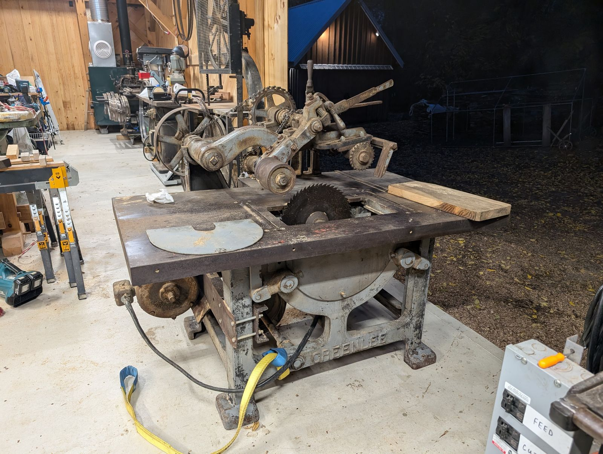

No. 426 Self-Feed Rip Saw
Power-fed production ripping · 400-Series · January 1910

The machine
Before anything fine can happen in a woodshop, somebody has to break the lumber down — rip the wide, rough plank into working widths, over and over, all day. The self-feed rip saw is the machine that did it. Powered feed rolls grip the plank and pull it steadily through a fixed circular blade, so the operator’s job is to keep the machine fed rather than to push the cut. It is a production machine in the plainest sense: its output was measured in board-feet, and its virtue was that it never got tired.
This example
Serial 18929 left Rockford in January 1910, six years after the company’s move. The 400-Series were Greenlee’s saws, and the 426 sat at the bulk end of the line — sawmill breakdown, not cabinet work. Machines like this rarely survive: they lived hard lives in dusty rooms and were scrapped without ceremony when carbide and steel roller tables replaced them. This one made it out.